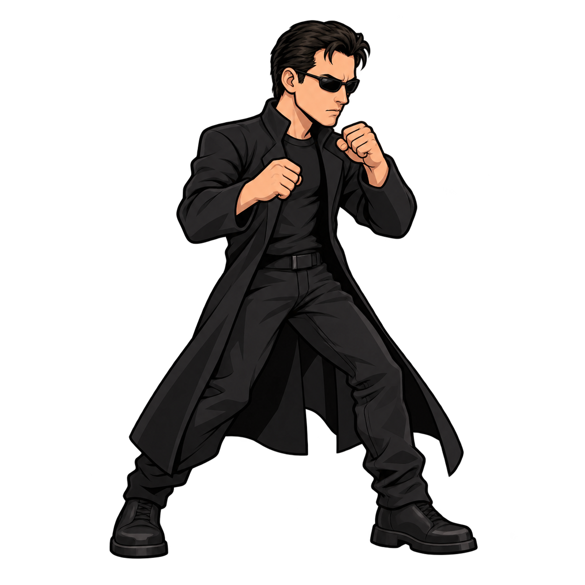

Arkusze robocze. Oceń zamianę nóg, stałą skalę i przejście ostatniej klatki do pierwszej. Grafiki nie są jeszcze podłączone do gry.
Ładowanie arkuszy…

Położenie stóp jest wyrównane na potrzeby przeglądu. Podgląd nie zmienia źródłowych PNG. Skala jest stała w obrębie klipu, więc różnice między pozami pozostają widoczne.